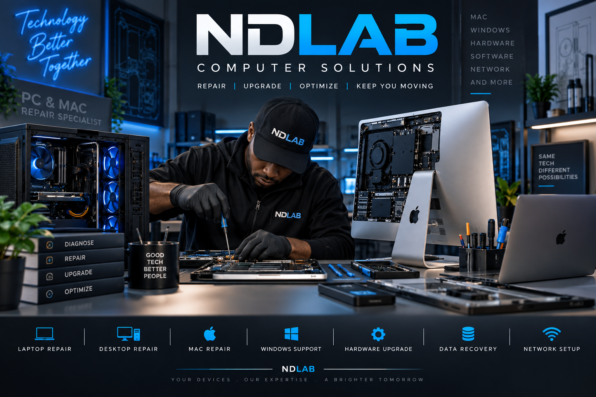

🖥️
PC Repair
Diagnostics, board-level fault finding, performance fixes, and full hardware repair for desktops and laptops.
PC & Mac diagnostics, repairs, upgrades, and recovery for modern digital life.


Diagnostics, board-level fault finding, performance fixes, and full hardware repair for desktops and laptops.
Apple system troubleshooting, SSD swaps, screen repairs, and software issues tailored to Mac hardware.
RAM, SSD, cooling, and component upgrades designed to improve speed, stability, and lifespan.
Secure recovery solutions for failed drives, deleted files, corruption, and damaged storage media.
Wi-Fi optimization, router configuration, business network support, and device-to-device connectivity.
Detailed health checks to isolate faults before repairs begin, saving time and reducing unnecessary work.
We approach every device like a technical lab case: clean diagnosis, documented findings, honest recommendations, and repairs that prioritize stability and long-term performance.
We assess the device, review symptoms, and isolate the fault before any repair begins.
We perform the correct fix using tested parts, careful handling, and proven repair methods.
Every system is benchmarked and verified to ensure stability, performance, and reliability.
You receive clear guidance, maintenance notes, and the confidence that your device is ready to use.
“My computer was running extremely slow. NDLAB diagnosed the problem, upgraded the hardware, and now it runs like new. Very professional service.”
“I thought my MacBook was finished, but NDLAB found the problem and repaired it quickly. They explained everything clearly and kept me informed throughout the process.”
“I needed more storage and memory for my work computer. NDLAB recommended exactly what I needed without trying to sell me things I didn't need.”
“Our Wi-Fi and network kept dropping at the office. NDLAB found the issue and got everything working properly. Fast, professional and easy to deal with.”
“Excellent service from start to finish. They recovered important files from my old computer and helped me set up a reliable backup system.”
“Friendly, knowledgeable and straightforward. I finally found someone who can handle both PC and Mac problems without making things complicated.”
Whether it’s a slow workstation, failing MacBook, damaged SSD, or network issue, we’ll guide you to the right fix.
Phone: 0485342532
Email: ferd.nda@gmail.com
Hours: Mon–Sat, 8:00 AM – 6:00 PM